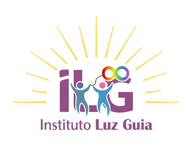

📱 Fale ConoscoO Instituto Luz Guia é um espaço dedicado ao desenvolvimento infantil, com foco em crianças atípicas entre 3 e 6 anos — a fase mais importante do aprendizado.
Nosso trabalho tem como base a psicomotricidade, aliada a estratégias educacionais inspiradas na ABA naturalista e recursos multidisciplinares que apoiam o aprendizado, o comportamento e as habilidades do dia a dia.
Orientamos pais e responsáveis sobre a importância da primeira infância, oferecendo apoio e direção — sendo uma Luz Guia no caminho do desenvolvimento da criança.
Atividades lúdicas que estimulam o desenvolvimento motor, cognitivo e emocional da criança.
Estratégias educacionais inspiradas na Análise do Comportamento Aplicada (ABA) naturalista.
Desenvolvimento de autonomia e independência nas tarefas cotidianas do dia a dia.
Tecnologia educacional para comunicação, interação social e linguagem.
Identificação de dificuldades pré-acadêmicas e estímulo à aprendizagem.
Apoio e direcionamento para pais e responsáveis no desenvolvimento da criança.
O TEA é uma condição do neurodesenvolvimento presente em diferentes graus e características. Estima-se que 1 em cada 31 crianças esteja no espectro.
Dentro do espectro, existem diferentes níveis de suporte. Nosso trabalho respeitada e naturalmente apoia o desenvolvimento de cada criança.
Entre em contato para agendar uma avaliação gratuita e conhecer nosso trabalho.
📱 Chamar no WhatsApp